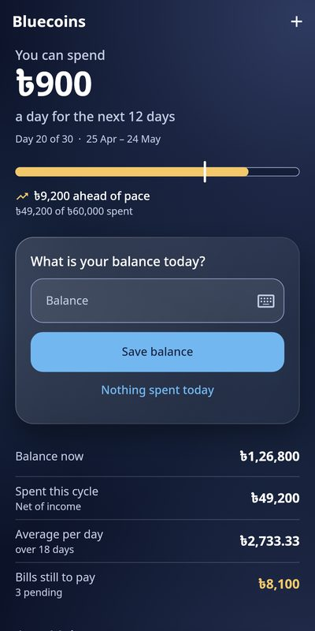
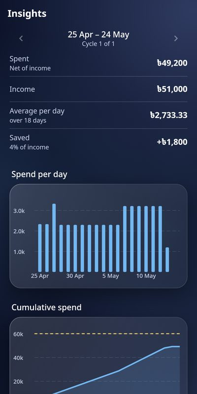

Know what you can spend today
Type the balance you have left. Bluecoins works out what you spent, your daily average, and what is safe to spend until payday. No bank login, no ads, no price.
Download for Android Source codeAndroid 7 or newer. Download the APK, open it, and allow installs from your browser or files app when asked.


- One number a day
- You do not log every coffee. Enter the balance you have left; spending is worked out from how it changed. Add expenses and categories only if you want the detail.
- Cycles that follow your payday
- Your month starts when you are paid, or every N days. Budget, days left and the average per day all follow your cycle.
- Safe to spend
- Home answers one question first: how much can I spend each day until the cycle ends.
- What if
- Try a scenario, such as spending less this week, and see the new numbers. Nothing is saved.
- Yours, offline
- Everything works without an account. Export to Excel or a backup file at any time, and lock the app with your fingerprint or PIN.
- Backup and sync, if you want it
- Sign in with Google to keep a copy in your own account and use another phone. Read the privacy policy; you can delete your account and its data at any time.